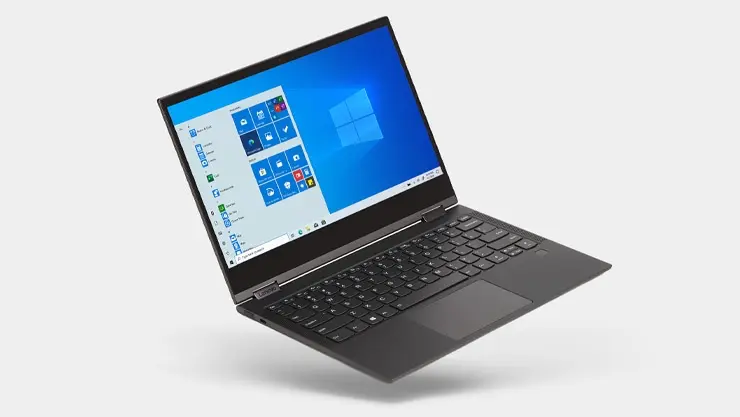

请访问原文链接：Windows 10 Enterprise LTSC 2021 简体中文版、繁体中文版、英文版下载 查看最新版。原创作品，转载请保留出处。
作者主页：sysin.org

The Long-Term Servicing Channel (LTSC)
下表总结了 Windows 10 LTSC 的等效功能更新版本和 SAC (半年频道) 版本。
| LTSC 版本 | 等效 SAC 版本 | 可用性日期 |
|---|---|---|
| Windows 10 企业版 LTSC 2015 | Windows 10 版本 1507 | 2015/7/29 |
| Windows 10 企业版 LTSC 2016 | Windows 10 版本 1607 | 2016/8/02 |
| Windows 10 企业版 LTSC 2019 | Windows 10 版本 1809 | 2018/11/13 |
| Windows 10 企业版 LTSC 2021 | Windows 10 版本 21H2 | 2021/11/16 |
备注
以前 Long-Term 服务分支服务分支 Long-Term LTSB (服务)。本文中对 LTSB 的所有引用都更改为 LTSC，以确保一致性，即使早期版本的名称可能仍显示为 LTSB。
使用 LTSC 服务模型，客户可以延迟接收功能更新，而只能在设备上接收每月质量更新。Windows 10 中可能使用新功能更新的功能（包括 Cortana、Edge 以及所有就地通用 Windows 应用）也不包含在内。功能更新每 2-3 年（而不是每 6 个月）在新的 LTSC 版本中提供，组织可以选择将其安装为就地升级 (sysin)，甚至跳过 10 年生命周期中的版本。Microsoft 致力于在此 10 年期间针对每个 LTSC 版本提供 Bug 修复和安全修补程序。
LTSC 2021 Windows 10 企业版
LTSC 2021 Windows 10 企业版中的功能等效于 Windows 10 21H2 版。
LTSC 版本 适用于特殊用途的设备。针对半年频道发布的应用和工具对 LTSC 的支持可能 Windows 10 受到限制。
Windows 10 企业版 LTSC 2021 建立在 Windows 10 企业版 LTSC 2019 的基础上，添加了高级功能，如抵御现代安全威胁的高级防护和全面的设备管理、应用管理和控制功能。
Windows 10 企业版 LTSC 2021 版本包括 Windows 10 版本 1903、1909、2004、21H1 和 21H2 中提供的累积增强功能。下面提供了有关这些增强功能的详细信息。
生命周期
重要
Windows 10 企业版 LTSC 2021 生命周期为 5 年 (IoT 继续拥有 10 年的生命周期)。因此，LTSC 2021 版本不能直接替代生命周期为 10 年的 LTSC 2019。
有关此版本的生命周期详细信息 (sysin)，请参阅 LTSC Windows 10 Long Term Servicing Channel (下一) 版本。
新增功能
详见：What’s new in Windows 10 Enterprise LTSC 2021
下载地址
Windows 10 Enterprise LTSC 2021 简体中文版、繁体中文版、英文版
Windows 10 Enterprise LTSC 2021 简体中文版 x64
- 文件名：SW_DVD9_WIN_ENT_LTSC_2021_64BIT_ChnSimp_MLF_X22-84402.ISO
- 别名：zh-cn_windows_10_enterprise_ltsc_2021_x64_dvd_033b7312.iso
- SHA256SUM: C117C5DDBC51F315C739F9321D4907FA50090BA7B48E7E9A2D173D49EF2F73A3
Windows 10 Enterprise LTSC 2021 繁体中文版 x64
- 文件名：SW_DVD9_WIN_ENT_LTSC_2021_64BIT_ChnTrad_MLF_X22-84404.ISO
- 别名：zh-tw_windows_10_enterprise_ltsc_2021_x64_dvd_80dba877.iso
- SHA256SUM: FFDFEA3D3B77F041F019B9CC095E1197648BB689EC59582442460AD98E01347A
Windows 10 Enterprise LTSC 2021 English x64
- 文件名：SW_DVD9_WIN_ENT_LTSC_2021_64BIT_English_MLF_X22-84414.ISO
- 别名：en-us_windows_10_enterprise_ltsc_2021_x64_dvd_d289cf96.iso
- SHA256SUM: C90A6DF8997BF49E56B9673982F3E80745058723A707AEF8F22998AE6479597D
Windows 10 IoT Enterprise LTSC 2021 English x64
- 文件名：en-us_windows_10_iot_enterprise_ltsc_2021_x64_dvd_257ad90f.iso
- SHA256SUM: a0334f31ea7a3e6932b9ad7206608248f0bd40698bfb8fc65f14fc5e4976c160
Windows 10 IoT Enterprise LTSC 2021 English arm64
- 文件名：en-us_windows_10_iot_enterprise_ltsc_2021_arm64_dvd_e8d4fc46.iso
- SHA256SUM: ce105a9a39fa21a38d11dc7249eaf209b9a55279963901da2759b7093bcfd8c7
更多：Windows 10 version 22H2 中文版、英文版下载 (2025 年 10 月更新)
Windows 10 MUI 多国语言包：
特殊说明
注意：随 Windows 10 2004 版一起发布的语言包同样与 Windows 10 Enterprise LTSC 2021 媒体兼容
访问此网站可获取有关在 Windows 10 映像中添加语言的更多信息
Windows 10, version 2004 or newer Language Packs (released May 2020)32/64 bit/ARM64
5675 MB ISO
SHA256SUM: 201269A05A09DBA91D47923C733D43F38F38EBF33DE2FD0750887D2763886743
百度网盘链接：https://pan.baidu.com/s/1S-vqkvdMvdf7kZ7WVEKi1A?pwd=miet
虚机模板下载：
更多：Windows 下载汇总

文章用于推荐和分享优秀的软件产品及其相关技术，所有软件默认提供官方原版（免费版或试用版），免费分享。对于部分产品笔者加入了自己的理解和分析，方便学习和研究使用。任何内容若侵犯了您的版权，请联系作者删除。如果您喜欢这篇文章或者觉得它对您有所帮助，或者发现有不当之处，欢迎您发表评论，也欢迎您分享这个网站，或者赞赏一下作者，谢谢！
 支付宝赞赏
支付宝赞赏  微信赞赏
微信赞赏赞赏一下
敬请注册！点击 “登录” - “用户注册”（已知不支持 21.cn/189.cn 邮箱）。 请勿使用联合登录（已关闭）。